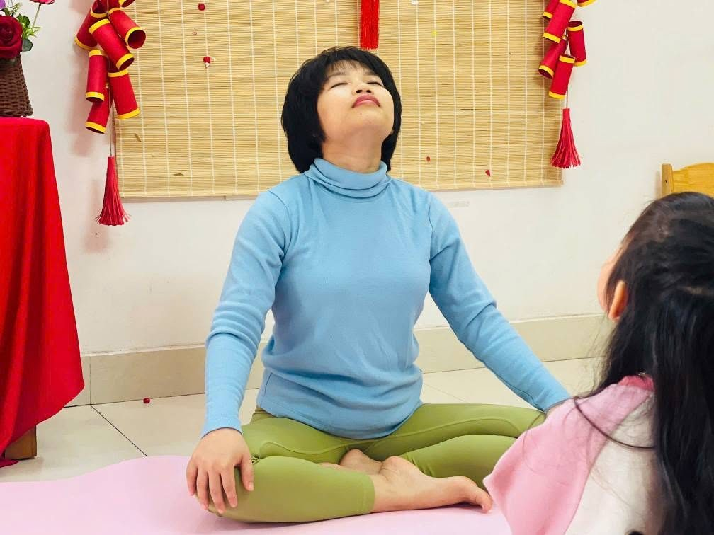
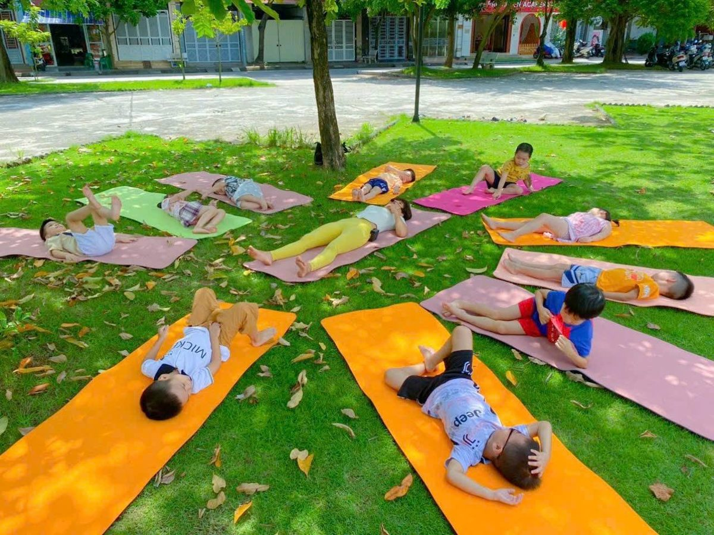

Luyện thở theo 5 dòng khí (pancha vayu): Prana, Apana, Samana, Udana, Vyana. Ý nghĩa, cách vận khí, lợi ích và chống chỉ định
Ngày xưa, sáu người học trò tìm đến nhà hiền triết Pippalada để hỏi về những điều sâu xa nhất. Ông không trả lời ngay. Ông bảo họ ở lại một năm, sống giản dị, giữ giới, giữ lòng tin. Hết năm, ai muốn hỏi gì thì hỏi.
Người thứ ba hỏi về hơi thở. Sinh lực này từ đâu mà có? Nó vào thân thế nào? Nó chia mình ra sao để ở trong ta?
Pippalada trả lời bằng một hình ảnh rất đời. Như nhà vua cắt cử các quan: ông đi cai quản làng này, ông đi cai quản làng kia. Sinh lực cũng tự chia mình ra, mỗi phần giữ một việc, ở một chỗ. Câu chuyện ấy nằm trong Prashna Upanishad, và năm “vị quan” ấy là năm dòng khí mà người tập yoga gọi là pancha vayu.
Cô từng học thuộc năm cái tên này như học bài. Chỉ đến khi tập thở riêng theo từng hướng, xuống, vào giữa, vào trong, lên, lan ra, cô mới thấy mỗi hướng để lại trong người một cảm giác khác nhau thật. Bài này Sophia viết để chia sẻ cách tập ấy: chậm, an toàn, và nói rõ đâu là kinh nghiệm truyền thống, đâu là điều khoa học đã đo được.

Một khoảnh khắc ở lớp: hít vào, ngực mở, mặt ngửa lên. Hướng đi vào và đi lên của hơi thở.
Trong yoga, prana là sinh lực, cái làm cho một cơ thể sống khác với một cơ thể không còn sống. Hơi thở là biểu hiện dễ thấy nhất của nó, nhưng prana rộng hơn hơi thở. Vayu nghĩa là gió, là chuyển động. Pancha vayu, năm cơn gió, là năm cách mà một sinh lực duy nhất chuyển động trong thân: năm hướng, năm việc.
Sophia hay ví thế này. Một dòng sông ra đến đồng bằng thì tỏa thành nhiều nhánh. Nước vẫn là một, chỉ có hướng chảy khác nhau. Năm dòng khí cũng vậy.
Prana, dòng đi vào: ở lồng ngực, đón nhận.
Apana, dòng đi xuống: ở bụng dưới, thải ra, buông.
Samana, dòng về giữa: ở quanh rốn, tiêu hóa, cân bằng.
Udana, dòng đi lên: ở cổ họng, nói, vươn lên.
Vyana, dòng lan tỏa: khắp cơ thể, lưu thông, kết nối.
Luyện thở theo năm dòng khí là thở chậm, đều, và đặt sự chú ý theo đúng hướng của từng dòng. Đây là một cách luyện điều khí có hệ thống: bài điều khí dạy mình dẫn ý theo hơi thở, còn bài này đi qua năm hướng mà người xưa đã vẽ ra.
🔬 Phần có nghiên cứu
Thở chậm, thở bằng mũi, thở ra dài, thở bụng, ngân nga, và luyện cảm nhận cơ thể. Những điều này đã được đo bằng nhịp tim, huyết áp, điện não, bảng hỏi tâm lý.
🪷 Phần là quan niệm truyền thống
Prana, năm dòng khí, vị trí và hướng đi của chúng, mối liên hệ với năm đại và các luân xa. Đây là bản đồ để luyện tâm của người xưa, chưa được chứng minh như một cấu trúc giải phẫu có thật.
Kinh điển và các bậc thầy nói gì
Năm dòng khí không phải ý tưởng của yoga hiện đại. Chúng có mặt trong những văn bản cổ nhất của Ấn Độ, và mỗi thời lại được các thầy giảng thêm một lớp.
Các Upanishad. Brihadaranyaka Upanishad (1.5.3) đã kể đủ năm tên: prana, apana, vyana, udana, samana, “tất cả những thứ ấy là prana”. Chandogya Upanishad (3.13) gọi chúng là năm cánh cửa của trái tim, mỗi cửa nhìn về một hướng. Prashna Upanishad, câu hỏi thứ ba, tả kỹ nhất: apana ở chỗ bài tiết và sinh sản, prana ở mắt, tai, miệng, mũi, samana ở giữa để phân phối thức ăn, vyana đi trong vô số mạch nhỏ tỏa ra từ trái tim, còn udana đưa con người đi lên.
Bhagavad Gita (4.29) nói về những người “dâng prana vào apana, dâng apana vào prana”, tức là lấy chính hơi thở vào ra làm một cách tu tập. Yoga Sutra của Patanjali (3.39 và 3.40, tùy bản đánh số) nhắc riêng udana và samana: làm chủ udana thì nhẹ nhõm, làm chủ samana thì tỏa sáng.
Các sách hatha yoga. Gheranda Samhita (chương 5, câu 61 đến 65) và Shiva Samhita (chương 3) kể mười dòng khí: năm dòng chính và năm dòng phụ lo việc ợ, chớp mắt, hắt hơi, ngáp và những gì còn lại sau khi chết. Năm dòng chính được đặt ở tim (prana), hậu môn (apana), rốn (samana), cổ họng (udana) và khắp thân (vyana). Hatha Yoga Pradipika (chương 3) dạy các khóa, bandha, để đưa apana đi lên và prana đi xuống, gặp nhau ở vùng rốn.
Các bậc thầy thế kỷ 20. Swami Sivananda viết về năm dòng khí trong The Science of Pranayama. Trường yoga Bihar của Swami Satyananda Saraswati, qua cuốn Asana Pranayama Mudra Bandha (1969) và cuốn Prana and Pranayama của Swami Niranjanananda (2009), vẽ vùng rộng hơn: prana từ thanh quản đến cơ hoành, samana từ cơ hoành đến rốn, apana dưới rốn, udana ở cổ, đầu và tứ chi, vyana khắp thân. B.K.S. Iyengar trong Light on Pranayama (1981) mô tả chức năng từng dòng và cẩn thận dặn người tập đi từng bước. T.K.V. Desikachar, con trai và học trò của thầy Krishnamacharya, trong The Heart of Yoga (1995) giải thích pranayama qua cặp prana và apana, và nhắc lời thầy mình: bài tập phải hợp với người tập, không phải người tập uốn theo bài.
“Hơi thở dao động thì tâm dao động. Hơi thở lặng yên thì tâm lặng yên.”Hatha Yoga Pradipika, chương 2, câu 2
Các sách không hoàn toàn giống nhau về vị trí chính xác của từng dòng. Bài này theo cách mô tả phổ biến nhất. Điểm chung của mọi trường phái là hướng đi: vào, xuống, về giữa, lên, lan tỏa.
Sơ đồ năm dòng khí trên cơ thể
Chạm vào tên một dòng khí để xem nó ở đâu, đi hướng nào, lo việc gì.
Chạm vào một dòng khí
Mỗi chấm màu là chỗ dòng ấy “ở”. Vòng xanh lá bao quanh cả người là Vyana, dòng lan tỏa.
Dòng khí
Ở đâu
Hướng đi
Việc của thân
Việc của tâm
Đại, luân xa gần
Prana
Lồng ngực, tim, phổi
Vào trong, lên trên
Hít vào, nhịp tim, nhận vào qua giác quan
Đón nhận, cảm hứng
Khí · tim
Apana
Bụng dưới, vùng chậu
Xuống dưới, ra ngoài
Thở ra, bài tiết, kinh nguyệt, sinh nở
Buông bỏ, tiếp đất
Đất · gốc, xương cùng
Samana
Quanh rốn
Từ hai phía về giữa
Tiêu hóa, hấp thu
Tiêu hóa trải nghiệm, phân định
Lửa · búi mặt trời
Udana
Cổ họng, lên đầu
Đi lên
Nói, nuốt, nét mặt, đứng thẳng
Biểu đạt, ý chí, vươn lên
Không gian · cổ họng
Vyana
Khắp cơ thể
Từ trung tâm ra mọi phía
Tuần hoàn, phối hợp cử động
Kết nối, trọn vẹn
Nước · khắp thân
Cột “đại, luân xa” là cách ghép phổ biến trong sách yoga hiện đại, không có đủ trong các văn bản cổ. Ai muốn đọc thêm có bài luân xa và năm thể con người: năm dòng khí thuộc về thể khí, lớp nằm giữa thân và tâm.
Trước khi tập
Những bài thở dưới đây đều nhẹ, dành cho người mới. Nhưng nhẹ không có nghĩa là làm sao cũng được. Đây là những điều cô dặn trước mỗi buổi.
🌿 Cột sống trước
Ngồi trên gối cho hông cao hơn gối, hoặc ngồi ghế, lưng không tựa. Đỉnh đầu nhẹ lên trần. Cột sống thẳng thì cơ hoành mới có chỗ lên xuống.
🍵 Bụng nhẹ
Tập lúc đói vừa, hoặc hai ba tiếng sau bữa chính. Sáng sớm và chiều muộn là đẹp nhất.
👃 Thở bằng mũi
Hít vào và thở ra đều qua mũi, trừ khi bài nói khác. Ngạt mũi thì xì mũi trước, hoặc thở miệng thật nhẹ.
🚫 Không nín thở
Người mới không nín. Chỗ “nghỉ” ở Samana chỉ là khoảng lặng tự nhiên sau thở ra, thấy cần thở là thở.
🌗 Bảy phần sức
Không hít căng hết cỡ, không thở ra kiệt. Hơi thở luôn êm, không có tiếng gấp. Nhịp đếm chỉ là gợi ý, thấy dài thì rút ngắn.
✋ Dừng khi
Chóng mặt, tê quanh miệng hay đầu ngón tay, tim đập nhanh, khó chịu ở ngực, thấy hoảng: mở mắt, thở bình thường, nghỉ.
Cách thở cho từng dòng khí
Cô xếp năm dòng theo thứ tự hay dùng ở lớp: đi xuống trước để có gốc, về giữa để có trung tâm, rồi mới mở vào, đi lên, và cuối cùng lan tỏa ra cả người. Hình nhỏ bên cạnh mỗi dòng chuyển động theo nhịp thở gợi ý: mũi tên đậm là hướng của nhịp đang thở.
Apana vayuDòng đi xuống, dòng buông
Bụng dưới, vùng chậuHướng xuống và raĐại đấtNhịp 4 / 6
Apana là dòng khí lo việc đưa ra ngoài: hơi thở ra, chất thải, kinh nguyệt, em bé lúc chào đời. Ở tầng tâm, đó là khả năng buông. Người xưa đặt nó ở vùng bụng dưới và đáy chậu, hướng đi xuống đất.
Cách thở, từng bước:
Ngồi trên gối cao cho hông cao hơn gối, hoặc ngồi ghế, hai bàn chân đặt chắc xuống sàn. Úp hai bàn tay lên đùi, hoặc làm Apana mudra: ngón giữa và áp út chạm ngón cái.
Hít vào qua mũi, nhẹ nhàng, để bụng tự phồng.
Thở ra qua mũi, dài hơn hít vào. Đưa sự chú ý từ rốn xuống bụng dưới, xuống đáy chậu, rồi theo hai chân xuống lòng bàn chân, như rễ cây cắm xuống đất.
Cuối hơi thở ra, có thể thấy đáy chậu tự co lên rất nhẹ. Cứ để cơ thể làm. Hít vào thì thả mềm hoàn toàn.
Chín đến mười hai hơi. Hít 4 nhịp, thở ra 6 nhịp.
Với người đã tập lâu: Mula bandha nhẹ, khóa đáy chậu, giữ một hai giây cuối hơi thở ra rồi thả. Hatha Yoga Pradipika viết rằng khóa này kéo apana vốn đi xuống quay lên, gặp prana. Người mới chưa cần, chỉ cần cảm nhận.
Khi nào hợp. Buổi tối, khi bồn chồn, nóng ruột, đầu óc bốc lên, khi khó ngủ. Truyền thống còn dùng cho người hay táo bón, bụng dưới nặng.
🔬 Khoa học nói gì. Khi thở, cơ hoành và cơ sàn chậu chuyển động cùng nhau như hai cái pít-tông. Hít vào, cả hai hạ xuống. Thở ra, cả hai nâng lên (Hodges và cộng sự, 2007). Hơi thở ra dài hơn hít vào nghiêng hệ thần kinh về phía nghỉ ngơi (Russo và cộng sự, 2017). Một thử nghiệm năm 2023 ở Stanford: năm phút mỗi ngày thở nhấn vào hơi thở ra giúp tâm trạng tốt lên rõ hơn nhóm chỉ ngồi thiền chánh niệm (Balban và cộng sự).
⚠️ Cẩn thận. Đang mang thai: thở ra thả lỏng, không gồng sàn chậu, không giữ khóa. Đau vùng chậu, trĩ đang chảy máu, sa tạng chậu, vừa sinh hoặc vừa mổ: hỏi bác sĩ hoặc chuyên viên vật lý trị liệu sàn chậu trước.
💛 Ở lớp, cô hay cho tập dòng này trước tiên. Có gốc rồi mới lên được. Người mới đến lớp, vai thường ở sát tai, đầu óc còn ở cơ quan. Mười hơi thở ra xuống chân, vai tự hạ.
Samana vayuDòng về giữa, dòng tiêu hóa
Quanh rốnTừ hai phía gom vào giữaĐại lửaNhịp 4 / 4, nghỉ 2
Samana nằm giữa tim và rốn, nơi prana đi xuống và apana đi lên gặp nhau. Nó như ngọn lửa bếp: nhận vào, nấu chín, giữ lại cái nuôi mình, bỏ đi cái thừa. Truyền thống nói Samana tiêu hóa cả thức ăn, cả cảm xúc và ý nghĩ.
Cách thở, từng bước:
Ngồi thẳng, hai tay đặt quanh rốn, các ngón tay chạm nhẹ vào nhau.
Hít vào qua mũi, để bụng nở đều ra phía trước, hai bên sườn và cả sau lưng, như quả bóng tròn.
Thở ra, bụng thu nhẹ về rốn. Hình dung mọi thứ từ trên xuống, từ dưới lên, từ hai bên đều gom về một điểm ấm ở giữa.
Hết hơi thở ra, nghỉ tự nhiên một hai nhịp, không nín, không ép. Thấy cần thở thì hít vào ngay.
Chín hơi. Hít 4, thở ra 4, nghỉ 2.
Với người đã tập lâu, bụng rỗng, có thầy hướng dẫn: Agnisara, đẩy bụng ra vào nhiều lần trong lúc nín sau thở ra, và Uddiyana bandha, hút bụng lên dưới lồng ngực. Đây là những bài mạnh, có nhiều chống chỉ định, xem bài Nauli. Người mới chỉ cần phần thở bụng ở trên.
Khi nào hợp. Trước bữa ăn mười phút, hoặc hai ba giờ sau ăn. Khi lo nghĩ rối, nhiều việc cùng lúc, khi cần ra một quyết định.
🔬 Khoa học nói gì. Cơ hoành là một phần của “van” ngăn dịch dạ dày trào ngược lên thực quản. Một thử nghiệm ngẫu nhiên nhỏ ở Áo: người bị trào ngược tập thở bụng bốn tuần có ít triệu chứng hơn và chất lượng sống tốt hơn nhóm chứng (Eherer và cộng sự, American Journal of Gastroenterology 2012). Thở bụng chậm cũng là nền của hầu hết các bài thở làm dịu được nghiên cứu (Zaccaro và cộng sự, 2018).
⚠️ Cẩn thận. Không tập sau khi ăn no. Đang có thai, đang hành kinh, viêm loét dạ dày, thoát vị bụng, vừa mổ bụng: chỉ thở bụng thật nhẹ, tuyệt đối không Agnisara, Uddiyana, Nauli.
💛 Sophia hay ví Samana là “cái bếp” của mình. Lửa to quá thì cháy, nhỏ quá thì sống. Ăn chậm, nhai kỹ, ăn đúng bữa cũng là đang chăm dòng khí này, chẳng kém gì ngồi thở.
Prana vayuDòng đi vào, dòng đón nhận
Lồng ngực, quanh timHướng vào trong và lênĐại khíNhịp 4 / 4
Cùng một chữ prana vừa là sinh lực chung, vừa là tên dòng thứ nhất trong năm dòng. Prana vayu ở lồng ngực, lo việc hít vào, nhịp tim, và mọi thứ ta nhận vào qua mũi, mắt, tai, miệng. Nhận vào gì, ta thành cái đó.
Cách thở, từng bước:
Ngồi thẳng, mở vai, ngửa hai bàn tay trên đùi trong Gyan mudra. Hoặc đặt hai tay lên hai bên sườn để cảm nhận.
Hít vào qua mũi, chậm. Cảm nhận không khí mát ở đầu mũi đi vào, xuống ngực. Lồng ngực nở ra hai bên dưới bàn tay, xương đòn nâng lên rất nhẹ.
Thở ra qua mũi, êm, đều. Ngực vẫn giữ mở, vai không sụp. Giữ lại một chút ấm ở giữa ngực.
Chín hơi. Hít 4, thở ra 4. Thấy chóng mặt thì hít nhẹ lại.
Thủ ấn đi kèm: Gyan mudra ngửa tay hoặc Prana mudra. Truyền thống có thể nín ngắn sau hít vào (antara kumbhaka). Người mới, người huyết áp cao, bệnh tim không nín.
Khi nào hợp. Buổi sáng, ngoài trời hoặc cạnh cửa sổ mở. Khi uể oải, co người, mất hứng, sau những ngày ốm.
🔬 Khoa học nói gì. Thở bằng mũi khác thở bằng miệng không chỉ ở chỗ lọc bụi. Một nghiên cứu ghi trực tiếp điện não cho thấy nhịp hít vào bằng mũi đồng bộ với sóng ở vùng não cảm xúc và trí nhớ, và người ta nhận diện nét mặt sợ hãi nhanh hơn, nhớ tốt hơn khi đang hít vào (Zelano và cộng sự, Journal of Neuroscience 2016). Lúc hít vào tim cũng đập nhanh lên một chút, thở ra thì chậm lại, gọi là loạn nhịp xoang hô hấp, một dấu hiệu bình thường của hệ thần kinh khỏe.
⚠️ Cẩn thận. Không ưỡn thắt lưng để “mở ngực”. Không hít căng hết cỡ, dễ choáng. Hen, bệnh phổi: hít vừa phải, không ép.
💛 Cô hay nói với học viên: không chỉ không khí mới là prana. Cái mình xem trên điện thoại trước khi ngủ, câu mình nghe, món mình ăn, đều đi vào qua dòng này cả.
Udana vayuDòng đi lên, dòng biểu đạt
Cổ họng, lên đầuHướng lênĐại không gianNhịp 4 / 6
Udana ở cổ họng, đi từ ngực lên đầu. Nó lo việc nói, hát, nuốt, nét mặt, và cái sức vươn lên của con người: đứng thẳng dậy, nói ra điều mình nghĩ. Prashna Upanishad viết rằng Udana là dòng đưa ta đi lên khi rời bỏ thân xác.
Cách thở, từng bước:
Ngồi thẳng, cằm thu nhẹ về phía ngực, gáy dài. Đây là gợi ý rất nhẹ của Jalandhara bandha, khóa cổ, chưa phải khóa thật.
Hít vào qua mũi, cảm nhận gom hơi từ bụng lên ngực.
Thở ra qua mũi, cổ họng hơi khép như khi thì thầm, có tiếng êm như sóng biển, đó là hơi thở Ujjayi. Hoặc thở ra ngân “mmm” khẽ, như tiếng ong. Đưa sự chú ý từ ngực lên cổ họng, lên giữa trán, lên đỉnh đầu.
Sáu đến chín hơi. Hít 4, thở ra 6.
Với người đã tập lâu: Jalandhara bandha thật, cằm khóa vào hõm ức, dùng khi nín thở sau hít vào. Người huyết áp cao, bệnh tim, đau cổ không làm.
Khi nào hợp. Trước khi phải nói chuyện quan trọng, thuyết trình, gọi điện khó. Khi nghẹn lời, khi thấy mình “không nói nên lời”. Buổi chiều khi buồn ngủ nhẹ.
🔬 Khoa học nói gì. Ngân “mmm” làm lượng nitric oxide trong mũi tăng khoảng mười lăm lần so với thở ra im lặng, có lẽ nhờ rung động làm thông khí giữa hốc mũi và các xoang (Weitzberg và Lundberg, American Journal of Respiratory and Critical Care Medicine 2002). Tụng niệm, đọc kinh tự nhiên kéo nhịp thở về khoảng sáu hơi mỗi phút, đi cùng nhịp tim và huyết áp dao động điều hòa hơn (Bernardi và cộng sự, BMJ 2001).
⚠️ Cẩn thận. Không gồng cổ, không ép họng tạo tiếng to. Đang viêm họng, mất tiếng: bỏ Ujjayi, chỉ ngân thật khẽ hoặc thở thường.
💛 Cô hay gợi ý cho những ai sắp phải đứng trước nhiều người: tìm một góc yên, ngân “mmm” sáu hơi. Không phải phép màu. Chỉ là cổ họng được mở ra trước khi cần dùng đến.
Vyana vayuDòng lan tỏa, dòng kết nối
Khắp cơ thểTừ trung tâm ra mọi phíaĐại nướcNhịp 4 / 6
Vyana không ở một chỗ nào. Nó thấm khắp thân, từ tim ra tay chân, ra da, lo việc tuần hoàn, phối hợp cử động, và giữ cho bốn dòng kia gắn với nhau. Prashna Upanishad tả Vyana đi trong hàng vạn mạch nhỏ tỏa ra từ trái tim.
Cách thở, từng bước:
Ngồi hoặc nằm ngửa thư giãn. Nếu đứng: hai chân rộng bằng hông, hai tay thả lỏng.
Hít vào, gom cảm giác từ khắp cơ thể về giữa ngực: từ đầu ngón tay, ngón chân, từ đỉnh đầu, tất cả về tim.
Thở ra, để cảm giác ấy lan đi: ra hai cánh tay, đến đầu mười ngón tay; xuống hai chân, đến đầu mười ngón chân; ra khắp mặt da.
Nếu đứng, có thể dang hai tay ra hai bên khi thở ra, khép về trước ngực khi hít vào.
Chín hơi. Hít 4, thở ra 6. Cuối cùng thả hết, thở tự nhiên, cảm nhận cả cơ thể như một.
Thủ ấn đi kèm: không cần. Hai bàn tay mở, ngửa, các ngón tay tách nhẹ. Cuối buổi có thể chắp Anjali trước ngực.
Khi nào hợp. Cuối buổi tập, trước khi thư giãn nằm. Khi ngồi máy tính lâu, tay chân lạnh, thấy người rời rạc, đầu một nơi thân một nẻo.
🔬 Khoa học nói gì. Luyện cảm nhận tín hiệu bên trong cơ thể, gọi là cảm thụ nội tại (interoception), là phần cốt lõi của quét cơ thể và nhiều bài thiền. Các nhà nghiên cứu cho rằng đây là một con đường mà thực hành chiêm nghiệm hỗ trợ sức khỏe tâm lý (Farb và cộng sự, Frontiers in Psychology 2015). Thở chậm khoảng sáu hơi mỗi phút làm dao động nhịp tim lớn và đều hơn, cái mà các nhà nghiên cứu gọi là cộng hưởng (Lehrer và Gevirtz, 2014).
⚠️ Cẩn thận. Nằm ngửa không thoải mái khi mang thai tháng cuối, trào ngược: nằm nghiêng trái hoặc ngồi tựa. Người từng sang chấn thấy khó chịu khi nhắm mắt cảm nhận cơ thể: mở mắt, tập ngắn.
💛 Cuối buổi, cô hay hỏi cả lớp: hai bàn chân thấy thế nào? Khá nhiều người ngạc nhiên vì chân ấm lên. Có lẽ đó là cách đơn giản nhất để tả Vyana.
Với các con, cô không nói gì về năm dòng khí. Chỉ có trò thổi nến: hít vào thật đầy, thở ra thật chậm cho ngọn lửa nghiêng mà không tắt.
Năm dòng khí, khóa bandha và nín thở là chuyện của người lớn. Với trẻ em, cô chỉ dùng hơi thở qua trò chơi: thổi nến, thổi bong bóng, ngửi hoa, tiếng ong. Các con học thở ra dài mà không cần biết đó là Apana, học ngân nga mà không cần biết đó là Udana. Hơi thở của trẻ nhanh hơn người lớn, nên không bắt các con đếm theo nhịp của người lớn.
Chọn dòng khí theo trạng thái lúc này
Không cần ngày nào cũng tập đủ năm dòng. Chọn một trạng thái gần với mình lúc này, cô gợi ý dòng khí hợp nhất.
Chọn một trạng thái, cô gợi ý dòng khí và cách thở.
Đồng hồ nhịp thở theo dòng khí
Chọn một dòng khí, hoặc “cả năm” để đi lần lượt qua năm dòng. Thở theo chữ và theo chấm sáng chạy trên hình: chấm sáng đi đến đâu, đặt sự chú ý đến đó. Có chuông nhỏ lúc bắt đầu, lúc đổi dòng và lúc hết giờ, nên có thể nhắm mắt nghe.
Dòng khí
Nhịp thở
Thời gian
Apana vayuSẵn sàng
Video: năm dòng khí, mỗi dòng hai hơi thở
Video hơn hai phút, đi lần lượt Apana, Samana, Prana, Udana, Vyana. Mỗi dòng hai hơi thở, có chữ hướng dẫn và tiếng chuông nhỏ khi chuyển dòng. Dùng để làm quen với hướng đi của từng dòng trước khi tập dài hơn với đồng hồ ở trên.
Hình người và dòng khí do Sophia Yoga tự vẽ để minh họa hướng chú ý, không phải hình giải phẫu.
Chuỗi năm dòng khí 15 phút
Đi từ gốc lên ngọn, rồi lan ra. Bấm bắt đầu, có chuông nhỏ mỗi lần đổi bước. Bấm vào một bước bất kỳ để nhảy tới.
Xuống, về giữa, vào, lên, lan tỏa
Ngồi xuống, nhìn hơi thở Ngồi thẳng, mắt nhắm hoặc nhìn xuống sàn. Không sửa gì cả. Chỉ biết mình đang hít vào, đang thở ra.
Apana, đi xuống Úp tay lên đùi. Hít 4, thở ra 6. Mỗi hơi thở ra đưa xuống bụng dưới, xuống hai chân, xuống đất.
Samana, về giữa Hai tay quanh rốn. Hít vào bụng nở tròn, thở ra gom về rốn, nghỉ tự nhiên một chút.
Prana, đi vào Ngửa tay, mở vai. Hít vào cảm nhận khí mát vào mũi, ngực nở rộng. Thở ra êm, ngực vẫn mở.
Udana, đi lên Cằm thu nhẹ. Thở ra ngân “mmm” khẽ hoặc thở Ujjayi êm, đưa ý lên cổ họng, lên đỉnh đầu.
Vyana, lan tỏa Mở hai bàn tay. Hít vào gom về tim, thở ra lan ra mười đầu ngón tay, mười đầu ngón chân, khắp da.
Ngồi yên với cả năm Thả hết. Thở tự nhiên. Cảm nhận cả cơ thể như một dòng sông, nhiều nhánh mà một nước. Chắp tay trước ngực, mở mắt chậm.
Ít thời gian thì chỉ cần bước 2 và bước 6, năm phút: có gốc và có lan tỏa. Người cao huyết áp, đang lo âu nhiều thì dừng lâu hơn ở Apana, bớt ở Prana.
Năm dòng khí trong đời sống hằng ngày
Ngồi thở mười lăm phút mà hai mươi ba tiếng còn lại sống ngược thì dòng khí nào cũng khó yên. Theo cách nhìn của yoga cân bằng phục hồi, mỗi dòng khí được nuôi bằng những thói quen rất bình thường.
Apana
Đi chân đất trên cỏ, trên đất. Ăn đủ rau, đủ nước, đi vệ sinh đúng giờ. Ngủ trước mười một giờ. Biết nói “thôi, đủ rồi”.
Samana
Ăn chậm, nhai kỹ, ăn đúng bữa, ăn khi đói thật. Không vừa ăn vừa xem tin tức. Một việc một lúc.
Prana
Không khí trong lành, nắng sáng sớm. Chọn kỹ những gì đi vào mắt và tai, nhất là trước khi ngủ. Thức ăn tươi.
Udana
Nói thật, nói lời tử tế. Hát, ngân nga, tụng niệm. Ngồi thẳng, đứng thẳng. Làm điều mình hướng tới mỗi ngày một chút.
Vyana
Vận động mỗi ngày, đi bộ, vươn vai sau mỗi giờ ngồi. Ôm người thân. Ra thiên nhiên. Thiền vài phút mỗi ngày.
Không có gì trong đó là bí truyền. Chính sự bình thường ấy làm nên phục hồi. Hơi thở chỉ là phần mình tập có chủ ý, để nhớ ra những việc còn lại.
Khoa học nói gì, và chưa nói gì
Sophia đọc khá kỹ phần này trước khi viết. Trên mạng có nhiều lời hứa rất to về “khai mở năm dòng khí”. Thật lòng thì chưa có nghiên cứu nào đo được prana hay chứng minh năm dòng khí là những dòng chảy có thật trong cơ thể. Nhưng những việc mình làm khi luyện năm dòng khí, thở chậm, thở mũi, thở bụng, thở ra dài, ngân nga, cảm nhận cơ thể, thì đã được nghiên cứu khá nhiều.
Thở chậm. Một tổng quan hệ thống gom các nghiên cứu về thở chậm dưới mười hơi mỗi phút: thở chậm đi cùng tăng dao động nhịp tim (HRV), tăng hoạt động phó giao cảm, giảm lo âu, tăng cảm giác thư thái (Zaccaro và cộng sự, Frontiers in Human Neuroscience 2018). Tổng quan của Russo và cộng sự (Breathe 2017) mô tả những thay đổi ở tim, phổi và hệ thần kinh khi thở chậm ở người khỏe.
Thở theo nhịp cộng hưởng. Thở khoảng sáu hơi mỗi phút, có hoặc không có máy đo phản hồi, đã được thử trong rất nhiều nghiên cứu. Phân tích gộp năm 2020 của Lehrer và cộng sự trên 58 nghiên cứu thấy cải thiện ở nhiều mặt: lo âu, trầm cảm, giấc ngủ, thành tích thể thao, dù các tác giả nói rõ chất lượng nghiên cứu không đồng đều.
Thở ra nhấn mạnh. Thử nghiệm của Balban và cộng sự (Cell Reports Medicine 2023): năm phút mỗi ngày trong một tháng, nhóm thở nhấn vào hơi thở ra cải thiện tâm trạng nhiều hơn nhóm ngồi thiền chánh niệm.
Thở mũi, thở bụng, ngân nga. Hít vào bằng mũi đồng bộ với sóng ở vùng não cảm xúc và trí nhớ (Zelano và cộng sự 2016). Thở bụng giảm triệu chứng trào ngược trong một thử nghiệm nhỏ (Eherer và cộng sự 2012). Ngân “mmm” tăng nitric oxide trong mũi khoảng mười lăm lần (Weitzberg và Lundberg 2002). Cơ hoành và sàn chậu chuyển động cùng nhau theo hơi thở (Hodges và cộng sự 2007).
Thở theo yoga cho căng thẳng, lo âu. Các bác sĩ tâm thần Brown và Gerbarg (2005) tổng hợp cơ chế và các thử nghiệm ban đầu về thở yoga cho căng thẳng, lo âu, trầm cảm, và đề xuất dùng nó như một phần hỗ trợ bên cạnh điều trị, không thay điều trị.
Sơ bộ Đo được nitric oxide tăng, chưa rõ lợi ích lâu dài.
Luyện riêng từng dòng khí tốt hơn thở chậm thông thường
Chưa có Chưa có nghiên cứu so sánh trực tiếp.
Luyện năm dòng khí chữa được bệnh tim, tiểu đường, ung thư, vô sinh
Không có Cô chưa tìm thấy nghiên cứu đáng tin nào.
Nói cho công bằng. Chưa có nghiên cứu nào cho thấy đặt sự chú ý theo hướng Apana khác về sinh lý so với theo hướng Udana. Phần “hướng đi” là ngôn ngữ của truyền thống để dẫn tâm. Với Sophia, nó vẫn rất quý: tâm có một con đường để đi theo thì dễ ở lại với hơi thở hơn. Nhưng mình nên biết đâu là phần nào.
Năm dòng khí trong yoga cân bằng phục hồi
Với Sophia, năm dòng khí không phải một kỹ thuật cao siêu. Nó là một tấm bản đồ để mình nhìn lại cơ thể, và chỉ có nghĩa khi đứng trên ba cái gốc.
🌬️Hơi thở là gốc. Mọi dòng khí đều bắt đầu bằng hơi thở chậm, êm, bằng mũi. Hơi thở thô, gấp, gồng thì không có dòng nào yên.
🌿Cột sống là trọng tâm. Năm dòng khí xếp dọc theo cột sống, từ đáy chậu lên đỉnh đầu. Truyền thống gọi kênh chính là sushumna. Ngồi gù thì Samana bị ép, Prana không mở được, Udana không lên được.
⚖️Cân bằng là hướng đi. Prana và Apana là một cặp, vào và ra, lên và xuống. Bốc lên quá thì tập Apana, trùng xuống quá thì tập Prana. Không dòng nào “tốt hơn” dòng nào.
Trong tám bậc của yoga mà Patanjali để lại, luyện năm dòng khí chạm vào nhiều bậc cùng lúc.
Giới
Yama
Ahimsa, không làm hại: không ép hơi, không nín khi chưa đủ sức. Satya, chân thật: không hứa hơi thở chữa được mọi bệnh.
Luật
Niyama
Tapas, đều đặn mỗi ngày một chút. Svadhyaya, tự quan sát: hôm nay dòng nào đang lệch?
Tư thế
Asana
Ngồi vững và êm để cột sống thẳng, dòng khí có đường đi.
Hơi thở
Pranayama
Chính là bài này: điều hòa sinh lực qua hơi thở.
Thu giác quan
Pratyahara
Quay sự chú ý vào bên trong, theo dòng khí chứ không theo tiếng động.
Tập trung
Dharana
Đặt tâm vào một vùng, một hướng đi.
Thiền
Dhyana
Khi không cần dẫn nữa, chỉ ngồi cùng cả năm dòng.
Hợp nhất
Samadhi
Năm nhánh trở về một dòng sông.
Ahimsa, không làm hại, là giới cô nhắc nhiều nhất khi dạy thở. Pranayama mạnh, nín lâu, khóa chặt có thể làm hại người tập sai cách. Nhẹ mà đều thì đi được xa. Ai muốn đọc thêm có mục Giới và luật trong yoga.
Chống chỉ định, lưu ý và khi nào hỏi bác sĩ
Các bài thở nhẹ ở trên hợp với hầu hết mọi người. Phần cần cẩn thận là nín thở (kumbhaka), khóa bandha, và các bài thở mạnh, nhanh như Kapalabhati, Bhastrika. Đây là những điều Sophia luôn hỏi học viên trước khi tập.
Thở êm, thở ra dài, ngồi hoặc nằm nghiêng. Hỏi bác sĩ sản khoa trước khi tập bất kỳ bài thở mới nào.
Hen, COPD, bệnh phổi
Hít căng, thở mạnh, nín lâu
Thở nhẹ, thở mũi, thở ra mím môi nếu dễ chịu. Luôn mang thuốc cắt cơn. Bài tổng quan Cochrane (Santino và cộng sự 2020) thấy bài tập thở có thể giúp chất lượng sống của người hen, nhưng không thay thuốc.
Rối loạn lo âu, hoảng loạn
Nín thở, thở ra quá dài gây hụt hơi, thở nhanh
Mở mắt, nhịp nhẹ 3 / 4. Bắt đầu với Apana. Thấy hụt hơi thì quay về thở thường. Xem bài căng thẳng, lo âu.
Các bài khí mạnh, nín lâu, tập một mình nhiều giờ, khóa tu dài ngày
Tập ngắn, mở mắt, có người hướng dẫn, phối hợp với bác sĩ đang điều trị. Nghiên cứu của Lindahl và cộng sự (PLOS ONE 2017) ghi nhận người tập thiền có thể gặp trải nghiệm khó khăn, nhất là khi tập cường độ cao.
Động kinh
Thở nhanh, thở mạnh, Kapalabhati, Bhastrika
Thở nhanh có thể làm cơn dễ xuất hiện hơn. Chỉ thở chậm, có người bên cạnh.
Tăng nhãn áp, bong võng mạc, thoát vị, vừa mổ bụng hoặc mổ mắt
Nín thở có rặn, khóa bụng, thở mạnh
Chỉ thở nhẹ. Hỏi bác sĩ khi nào được tập lại bình thường.
Đang hành kinh
Uddiyana, Agnisara, Nauli, Mula bandha mạnh
Thở bụng nhẹ, Apana nhẹ, Vyana nằm. Nghe cơ thể.
Vừa ăn no, đang sốt, đang ốm cấp
Mọi bài thở dài
Nghỉ. Thở tự nhiên. Tập lại khi khỏe.
Trẻ em
Khóa bandha, nín thở, đếm nhịp như người lớn
Chỉ chơi trò thở: thổi nến, thổi bong bóng, tiếng ong.
Dừng ngay, mở mắt, thở bình thường nếu thấy: chóng mặt, hoa mắt; tê bì quanh miệng, đầu ngón tay (dấu hiệu thở quá nhiều); tim đập nhanh, hồi hộp; khó chịu ở ngực; đau đầu; cảm giác sợ hãi, mất thực tại. Phần lớn sẽ hết sau vài phút thở bình thường.
Đi khám, hoặc gọi cấp cứu 115, khi:
Đau ngực, khó thở đột ngột, vã mồ hôi, đau lan ra tay trái hoặc hàm: gọi cấp cứu ngay, không ngồi thở chờ đỡ.
Tê, yếu nửa người, méo miệng, nói khó: có thể là đột quỵ, gọi cấp cứu ngay.
Khó thở, khò khè tăng dần, thuốc cắt cơn không đỡ.
Chóng mặt, hồi hộp, khó chịu vẫn còn dù đã ngừng tập và nghỉ ngơi.
Lo âu, mất ngủ, buồn chán kéo dài trên hai tuần, ảnh hưởng tới công việc, ăn uống.
Trước khi bắt đầu, nếu đang có bệnh mạn tính, đang mang thai, đang dùng thuốc tim mạch, huyết áp, thuốc tâm thần: hỏi bác sĩ của mình.
Lời nhỏ cuối bài
Pippalada đã bắt những người học trò chờ một năm, rồi mới trả lời về hơi thở. Cô nghĩ ông muốn nói một điều: hiểu về prana không vội được.
Năm dòng khí cũng không cần thuộc trong một ngày. Tuần này thở Apana mỗi tối. Tuần sau thêm Vyana. Rồi một hôm, ngồi xuống, mình tự biết hôm nay cần dòng nào.
Hơi thở vẫn ở đó, từ lúc mình chào đời. Chỉ chờ mình quay về.

Thư giãn cuối buổi trên cỏ ở Ecopark. Thở tự nhiên, không đếm, không dẫn. Năm dòng trở về một.
🌿 Muốn được hướng dẫn tận tay?
Sophia Yoga có lớp người lớn trực tiếp, lớp Zoom và lớp kèm 1 kèm 1 (500.000đ / giờ) theo hướng yoga cân bằng phục hồi: hơi thở là gốc, cột sống là trọng tâm, tập vừa sức. Cô sẽ hỏi kỹ sức khỏe trước, rồi chọn bài thở hợp với từng người. Ai muốn mang yoga đến với các con, có khóa đào tạo HLV Yoga trẻ em, trong đó có cả kho trò chơi hơi thở cho các con.
Prashna Upanishad, câu hỏi thứ ba (Pippalada trả lời Kausalya). Brihadaranyaka Upanishad 1.5.3. Chandogya Upanishad 3.13. Prashna Upanishad, bản dịch có chú giải
Bhagavad Gita 4.29. Patanjali, Yoga Sutra 3.39–3.40 (tùy bản đánh số).
Sivananda S. (1935). The Science of Pranayama. The Divine Life Society.
Satyananda Saraswati S. (1969). Asana Pranayama Mudra Bandha. Bihar School of Yoga.
Niranjanananda Saraswati S. (2009). Prana and Pranayama. Yoga Publications Trust.
Iyengar B.K.S. (1981). Light on Pranayama. Allen & Unwin.
Desikachar T.K.V. (1995). The Heart of Yoga: Developing a Personal Practice. Inner Traditions.
Rama S., Ballentine R., Hymes A. (1979). Science of Breath: A Practical Guide. Himalayan Institute Press.
Zaccaro A. và cộng sự (2018). How breath-control can change your life: a systematic review on psycho-physiological correlates of slow breathing. Frontiers in Human Neuroscience, 12, 353. PubMed
Russo M.A., Santarelli D.M., O'Rourke D. (2017). The physiological effects of slow breathing in the healthy human. Breathe, 13(4), 298–309. PubMed
Lehrer P.M., Gevirtz R. (2014). Heart rate variability biofeedback: how and why does it work? Frontiers in Psychology, 5, 756.
Lehrer P. và cộng sự (2020). Heart rate variability biofeedback improves emotional and physical health and performance: a systematic review and meta analysis. Applied Psychophysiology and Biofeedback, 45(3), 109–129.
Balban M.Y. và cộng sự (2023). Brief structured respiration practices enhance mood and reduce physiological arousal. Cell Reports Medicine, 4(1), 100895. PMC
Zelano C. và cộng sự (2016). Nasal respiration entrains human limbic oscillations and modulates cognitive function. Journal of Neuroscience, 36(49), 12448–12467.
Hodges P.W., Sapsford R., Pengel L.H. (2007). Postural and respiratory functions of the pelvic floor muscles. Neurourology and Urodynamics, 26(3), 362–371. PubMed
Eherer A.J. và cộng sự (2012). Positive effect of abdominal breathing exercise on gastroesophageal reflux disease: a randomized, controlled study. American Journal of Gastroenterology, 107(3), 372–378. PubMed
Weitzberg E., Lundberg J.O. (2002). Humming greatly increases nasal nitric oxide. American Journal of Respiratory and Critical Care Medicine, 166(2), 144–145. PubMed
Bernardi L. và cộng sự (2001). Effect of rosary prayer and yoga mantras on autonomic cardiovascular rhythms: comparative study. BMJ, 323, 1446–1449. PubMed
Farb N. và cộng sự (2015). Interoception, contemplative practice, and health. Frontiers in Psychology, 6, 763.
Brown R.P., Gerbarg P.L. (2005). Sudarshan Kriya yogic breathing in the treatment of stress, anxiety, and depression: part I, neurophysiologic model. Journal of Alternative and Complementary Medicine, 11(1), 189–201.
Santino T.A. và cộng sự (2020). Breathing exercises for adults with asthma. Cochrane Database of Systematic Reviews, CD001277. PubMed
Lindahl J.R. và cộng sự (2017). The varieties of contemplative experience: a mixed-methods study of meditation-related challenges in Western Buddhists. PLOS ONE, 12(5), e0176239. PMC
Hình người, sơ đồ năm dòng khí và video do Sophia Yoga tự vẽ để minh họa hướng chú ý, không phải hình giải phẫu. Ảnh lớp học là ảnh thật. Bài viết chia sẻ kiến thức và kinh nghiệm tập luyện, không thay cho lời khuyên và chăm sóc của bác sĩ.